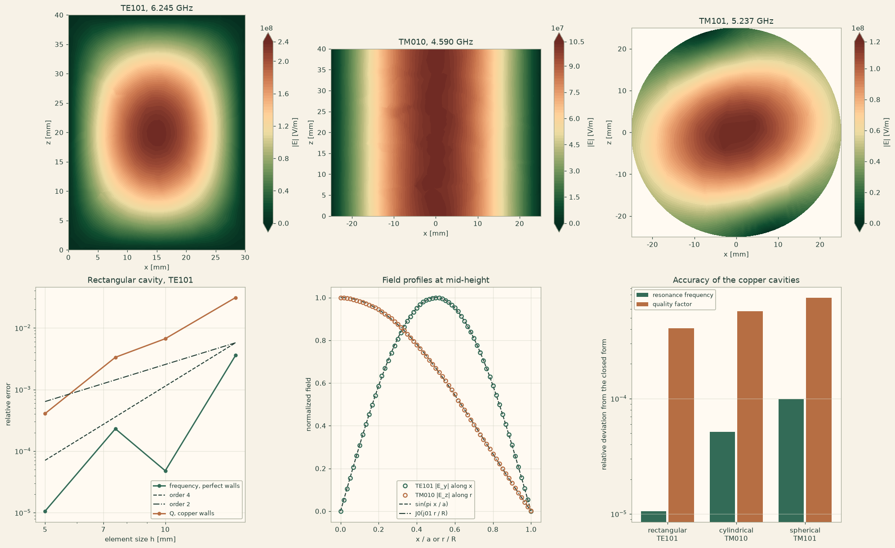

Docs › Examples › Q factors and resonant frequencies of cavity resonators
Microwaves, cavity resonators · 3D
Q factors and resonant frequencies of cavity resonators
Rectangular, cylindrical and spherical cavities with copper walls: their lowest resonances and the conductor quality factors.
Run locally with OneSimulation. The example downloads are free. Running them requires an activated runtime. Runtime Alpha 0.2.1a7 · CPython 3.13 on macOS (Apple Silicon), Ubuntu 22.04 (x86-64), and Windows x64. Installation and activation · View pilot plans. Scope of the reference checks.

What it computes
OneSimulation reads the air of each cavity from STEP, meshes it with straight or curved tetrahedra and runs the eigenfrequency study of the 3D Maxwell model on second-order Nedelec elements: shift-invert about a target with the zero-frequency gradient fields projected out, and the copper walls as a Leontovich surface impedance that is re-evaluated at each complex resonance by a fixed-point iteration. The quality factor follows from the complex eigenfrequency; a mesh study and perfectly conducting walls on the same mesh complete the check. The script that builds the STEP files comes with the notebook.
What it checks
Resonance frequencies agree with the closed forms f0(1 - 1/(2Q)) to 1.1e-5 (TE101), 5.1e-5 (TM010) and 1.3e-4 (threefold TM101 of the sphere), the quality factors 9388, 15762 and 20087 with Pozar's and Harrington's formulas to 4e-4, 6e-4 and 9e-4; the copper walls shift each resonance by -332.6, -145.6 and -130.4 kHz against -332.5, -145.5 and -130.2 kHz from perturbation theory, and the frequency error falls with order 4.6.
The notebook
The complete notebook, cell by cell. Run it to produce the figures and the comparison printout.
A closed metal cavity stores electromagnetic energy at discrete resonance frequencies. In a real cavity the walls are not perfect conductors: the field penetrates a skin depth \(\delta=\sqrt{2/(\omega\mu_0\sigma)}\) into the metal and the wall currents dissipate power. The quality factor
measures how many radians the field oscillates before its energy has dropped by \(1/e\).
For a good conductor the wall can be replaced by a boundary condition, the Leontovich surface impedance \(\mathbf E_t=Z_s\,\mathbf n\times\mathbf H\) with \(Z_s=(1-i)R_s\), \(R_s=\sqrt{\omega\mu_0/(2\sigma)}\) (for the phasor convention \(e^{-i\omega t}\)). SurfaceImpedanceBoundary applies it at the frequency of each resonance, and electromagnetic_modes solves the eigenvalue problem
discretized with second-order Nédélec elements, by shift-invert about a target frequency. The gradient fields of zero frequency are projected out, so no spurious modes appear; because the surface impedance depends on \(\omega\), each complex resonance is refined by a fixed-point iteration in \(\omega\).
| boundary | condition |
|---|---|
walls of every cavity | surface impedance of copper, \(\sigma=5.8\cdot10^7\) S/m |
Reference. D. M. Pozar, Microwave Engineering, 4th ed., §6.3 and §6.4: the TE\(_{101}\) mode of an \(a\times b\times d\) box resonates at \(f=\tfrac{c}{2}\sqrt{a^{-2}+d^{-2}}\) with
the TM\(_{010}\) mode of a cylinder of radius \(R\) and length \(L\) at \(f=c\,j_{01}/(2\pi R)\) with \(Q_c=\eta\,j_{01}/\big(2R_s(1+R/L)\big)\), \(j_{01}=2.40483\). R. F. Harrington, Time-Harmonic Electromagnetic Fields, §6-12: the lowest mode of a sphere of radius \(a\), TM\(_{101}\) (three modes of the same frequency), has \(ka=2.74371\), the root of \([x\,j_1(x)]'=0\), and \(Q_c\,\delta/a=1-2/(ka)^2\). The wall reactance, equal to the wall resistance, lowers every resonance of the perfectly conducting cavity, \(f_0\), to \(f=f_0\,(1-1/(2Q_c))\) (Pozar §6.7, perturbation of the walls).
import numpy as np
from onesim.cad.d2 import Plane
from onesim.cad.exchange import load
from onesim.materials import VACUUM_PERMEABILITY, VACUUM_PERMITTIVITY
from onesim.materials.electromagnetic import IsotropicElectromagneticMaterial
from onesim.meshing import TetrahedralMesher
from onesim.numerics import Numerics
from onesim.numerics.fem import FiniteElement, Nedelec
from onesim.numerics.linear import ComplexSparseDirect
from onesim.physics.electromagnetics import (
FrequencyDomainMaxwell,
PerfectElectricConductor,
SurfaceImpedanceBoundary,
electromagnetic_modes,
)
from onesim.simulation import Problem, Simulation
from onesim.visualization import plots, theme
from scipy.optimize import brentq
from scipy.special import j0, jn_zeros, spherical_jn
theme.set()
light = 1 / np.sqrt(VACUUM_PERMEABILITY * VACUUM_PERMITTIVITY)
eta = np.sqrt(VACUUM_PERMEABILITY / VACUUM_PERMITTIVITY)
copper = 5.8e7Geometry and mesh
load reads the air volume of each cavity. The box is meshed with straight tetrahedra; the cylinder and the sphere with curved (quadratic) tetrahedra whose edge midpoints lie on the CAD surface, so that the round walls are followed and not cut by chords.
names = ("rectangular", "cylindrical", "spherical")
cavities = {name: load(f"cavity_resonator_q_factors_{name}.step") for name in names}
sizes = {"rectangular": 5e-3, "cylindrical": 6.25e-3, "spherical": 6.25e-3}
meshes = {
name: TetrahedralMesher(
target_size=sizes[name], geometry_order=1 if name == "rectangular" else 2
).generate(cavities[name])
for name in names
}
fig = plots.figure(2, 3, size=(18, 11))
for column, name in enumerate(names):
plots.geometry(
cavities[name],
selection={"copper walls": cavities[name].boundaries.walls},
labels=False,
camera=plots.Camera(elevation=25, azimuth=-60),
title=f"{name.capitalize()} cavity (STEP)",
ax=fig[column],
)
plots.mesh(
meshes[name],
groups=("all",),
legend=False,
title=f"{meshes[name].cell_count} tetrahedra",
ax=fig[3 + column],
)
plots.show()Model and eigenfrequency study
One FrequencyDomainMaxwell model per cavity, solved once near its expected resonance; the solved result carries the operator from which electromagnetic_modes builds the eigenvalue problem. The sphere is asked for three modes: TM\(_{101}\) is threefold degenerate. Each cavity is solved with copper walls and, for comparison on the same mesh, with perfectly conducting walls.
a, b, d = cavities["rectangular"].size
radius, length = cavities["cylindrical"].size[0] / 2, cavities["cylindrical"].size[2]
sphere = cavities["spherical"].size[0] / 2
j01 = jn_zeros(0, 1)[0]
x101 = brentq(
lambda x: spherical_jn(1, x) + x * spherical_jn(1, x, derivative=True), 2, 3.5
)
exact = {
"rectangular": light / 2 * np.hypot(1 / a, 1 / d),
"cylindrical": light * j01 / (2 * np.pi * radius),
"spherical": light * x101 / (2 * np.pi * sphere),
}
resistance = lambda f: np.sqrt(np.pi * f * VACUUM_PERMEABILITY / copper)
k = {name: 2 * np.pi * exact[name] / light for name in names}
quality = {
"rectangular": (k["rectangular"] * a * d) ** 3
* b
* eta
/ (2 * np.pi**2 * resistance(exact["rectangular"]))
/ (2 * a**3 * b + 2 * b * d**3 + a**3 * d + a * d**3),
"cylindrical": eta
* j01
/ (2 * resistance(exact["cylindrical"]) * (1 + radius / length)),
"spherical": x101 * eta / (2 * resistance(exact["spherical"])) * (1 - 2 / x101**2),
}
numerics = Numerics(
spatial=FiniteElement(element=Nedelec(order=2)), linear_solver=ComplexSparseDirect()
)
model = lambda part, frequency: FrequencyDomainMaxwell(
domain=part.volume,
frequency=frequency,
material=IsotropicElectromagneticMaterial(),
phasor_convention="exp(-i*omega*t)",
amplitude_convention="peak",
)
walls = {
"copper": lambda m, part: SurfaceImpedanceBoundary(
physics=m, boundary=part.boundaries.walls, conductivity=copper
),
"perfect": lambda m, part: PerfectElectricConductor(
physics=m, boundary=part.boundaries.walls
),
}
solve = lambda part, mesh, m, wall="copper": Simulation(
problem=Problem(
name="Metal cavity",
geometry=part,
physics=(m,),
boundary_conditions=(walls[wall](m, part),),
),
mesh=mesh,
numerics=numerics,
).solve_stationary()
models = {name: model(cavities[name], 0.95 * exact[name]) for name in names}
modes = {
name: electromagnetic_modes(
solve(cavities[name], meshes[name], models[name]),
models[name],
mode_count=3 if name == "spherical" else 1,
)
for name in names
}
perfect = {
name: electromagnetic_modes(
solve(cavities[name], meshes[name], models[name], "perfect"),
models[name],
mode_count=3 if name == "spherical" else 1,
)
for name in names
}Results
The lowest mode of each cavity against the closed-form frequency \(f_0(1-1/(2Q_c))\) and the conductor \(Q\) from the surface resistance. The wall reactance lowers the resonance by \(f_0/(2Q_c)\), a few hundred kHz: on the same mesh the copper cavity resonates exactly that much below the perfectly conducting one, whose frequency carries the (larger) discretization error.
lossy = {name: exact[name] * (1 - 1 / (2 * quality[name])) for name in names}
print(
f"{'cavity':12s} {'mode':6s} {'f computed [GHz]':>17s} {'f exact [GHz]':>14s} {'deviation':>10s} {'Q computed':>11s} {'Q exact':>9s} {'deviation':>10s}"
)
for name, mode in zip(names, ("TE101", "TM010", "TM101")):
for f, q in zip(modes[name].resonance_frequencies, modes[name].quality_factors):
print(
f"{name:12s} {mode:6s} {f / 1e9:17.6f} {lossy[name] / 1e9:14.6f} {f / lossy[name] - 1:10.1e} {q:11.0f} {quality[name]:9.0f} {q / quality[name] - 1:10.1e}"
)
for name in names:
shift = modes[name].resonance_frequencies - perfect[name].resonance_frequencies
print(
f"{name:12s} perfect walls {perfect[name].resonance_frequencies[0] / 1e9:.6f} GHz (deviation {perfect[name].resonance_frequencies[0] / exact[name] - 1:.1e}); "
f"shift by copper {np.mean(shift) / 1e3:7.1f} kHz, closed form -f0/(2Q) = {-exact[name] / (2 * quality[name]) / 1e3:7.1f} kHz"
)
print(
"fixed-point iterations per mode:",
{name: list(modes[name].iterations) for name in names},
)Mesh study
The rectangular cavity on four meshes. The frequency of the perfectly conducting cavity converges from above with about the fourth power of the element size (second-order elements, the square of the field error); each unstructured mesh scatters the error about this trend. \(Q\), a ratio of a wall integral to a volume integral of the field, converges at a similar rate.
grids = {
h: TetrahedralMesher(target_size=h).generate(cavities["rectangular"])
for h in (15e-3, 10e-3, 7.5e-3, 5e-3)
}
study = {
(h, wall): electromagnetic_modes(
solve(cavities["rectangular"], grids[h], models["rectangular"], wall),
models["rectangular"],
mode_count=1,
)
for h in grids
for wall in walls
}
steps = np.array(sorted(grids))
frequency_error = np.array(
[
abs(study[h, "perfect"].resonance_frequencies[0] / exact["rectangular"] - 1)
for h in steps
]
)
quality_error = np.array(
[
abs(study[h, "copper"].quality_factors[0] / quality["rectangular"] - 1)
for h in steps
]
)
for h, ef, eq in zip(steps, frequency_error, quality_error):
print(f"h = {1e3 * h:4.1f} mm: frequency error {ef:.2e}, Q error {eq:.2e}")
print(
f"observed orders: frequency {np.polyfit(np.log(steps), np.log(frequency_error), 1)[0]:.2f}, "
f"Q {np.polyfit(np.log(steps), np.log(quality_error), 1)[0]:.2f}"
)Figure
Top: the magnitude of the electric field of each mode on a plane through the cavity (normalized to a stored energy of 1 J): the half sines of TE\(_{101}\) across the broad wall, the Bessel profile of TM\(_{010}\) across the cylinder and one of the three TM\(_{101}\) modes of the sphere; any combination of the three is a mode, so its axis takes an arbitrary direction. Bottom: the mesh study, the field profiles against the closed forms, and the relative deviations of all results.
planes = {
"rectangular": Plane(origin=(a / 2, b / 2, d / 2), normal=(0, 1, 0)),
"cylindrical": Plane(origin=(0, 0, length / 2), normal=(0, 1, 0)),
"spherical": Plane(origin=(0, 0, 0), normal=(0, 1, 0)),
}
labels = ("TE101", "TM010", "TM101")
across = np.linspace(0, 1, 61)
profiles = {
"TE101 |E_y| along x": (
across,
np.abs(
modes["rectangular"]
.mode(0)
.field(models["rectangular"].electric_field)
.evaluate(
np.column_stack(
(
across * a,
np.full_like(across, b / 2),
np.full_like(across, d / 2),
)
)
)[:, 1]
),
),
"TM010 |E_z| along r": (
across,
np.abs(
modes["cylindrical"]
.mode(0)
.field(models["cylindrical"].electric_field)
.evaluate(
np.column_stack(
(
across * radius * 0.999,
0 * across,
np.full_like(across, length / 2),
)
)
)[:, 2]
),
),
}
fig = plots.figure(2, 3, size=(18, 11))
for column, (name, mode) in enumerate(zip(names, labels)):
plots.section(
modes[name].mode(0).field(models[name].electric_field),
plane=planes[name],
component=lambda E, p: np.sqrt(np.sum(np.abs(E) ** 2, axis=1)),
subdivisions=3,
label="|E| [V/m]",
length_unit="mm",
title=f"{mode}, {modes[name].resonance_frequencies[0] / 1e9:.3f} GHz",
ax=fig[column],
)
plots.convergence(
steps * 1e3,
{"frequency, perfect walls": frequency_error, "Q, copper walls": quality_error},
order=(4, 2),
xlabel="element size h [mm]",
ylabel="relative error",
title="Rectangular cavity, TE101",
legend="lower right",
ax=fig[3],
)
plots.line(
points={
label: (x, values / values.max()) for label, (x, values) in profiles.items()
},
reference={
"sin(pi x / a)": (across, np.sin(np.pi * across)),
"J0(j01 r / R)": (across, j0(j01 * across)),
},
xlabel="x / a or r / R",
ylabel="normalized field",
title="Field profiles at mid-height",
legend="lower center",
ax=fig[4],
)
plots.bars(
[f"{name}\n{mode}" for name, mode in zip(names, labels)],
{
"resonance frequency": [
abs(modes[name].resonance_frequencies[0] / lossy[name] - 1)
for name in names
],
"quality factor": [
abs(modes[name].quality_factors[0] / quality[name] - 1) for name in names
],
},
scale="log",
ylabel="relative deviation from the closed form",
title="Accuracy of the copper cavities",
ax=fig[5],
)
plots.show()Going further
Fill a cavity with a lossy dielectric (IsotropicElectromagneticMaterial(relative_permittivity=2.1 * (1 + 4e-4j))): its \(Q\) follows \(1/Q=1/Q_c+\tan\delta\). A larger mode_count returns the higher modes with their own quality factors, and frequency_range=(f1, f2) every mode in a band.